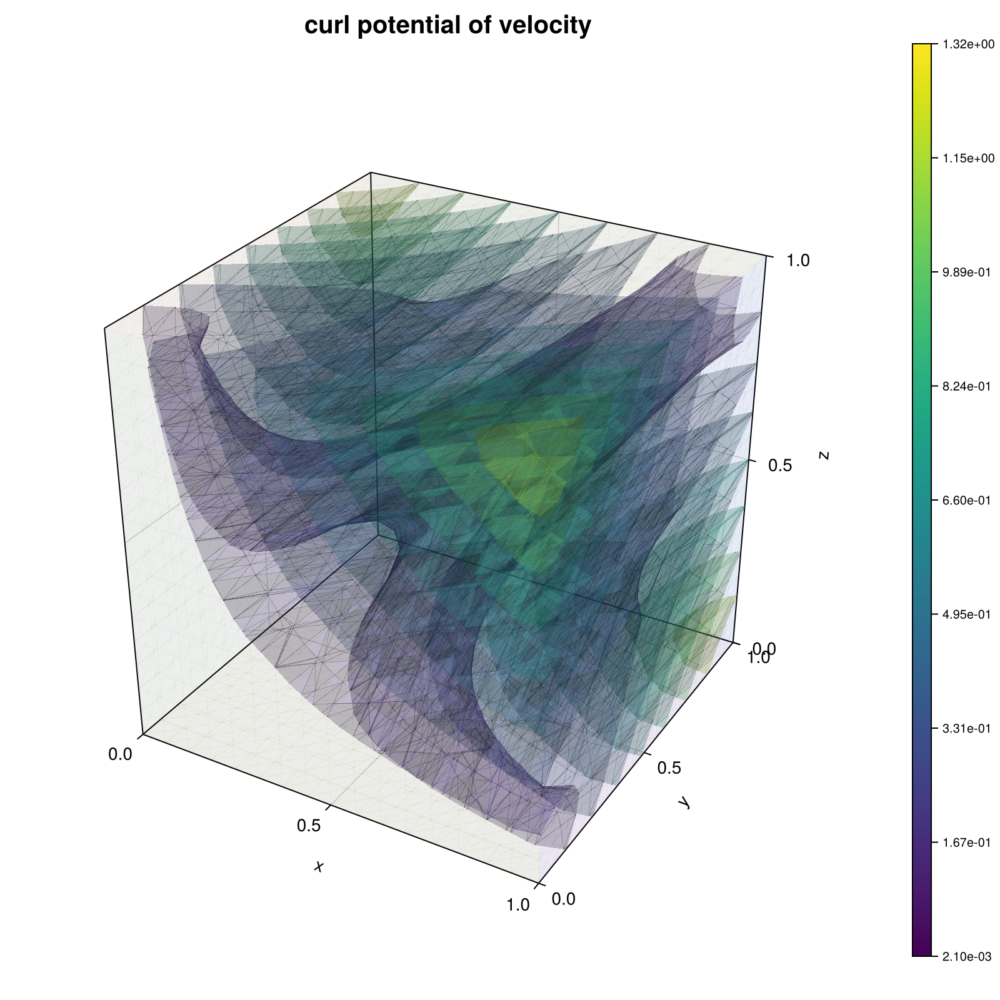

310 : Div-free RT0 basis
This example computes the best-approximation $\mathbf{\psi}_h$ of a divergence-free velocity $\mathbf{u} = \mathrm{curl} \mathbf{\psi}$ by solving for a curl-potential $\mathbf{\phi}_h \in N_0$ with
\[\begin{aligned} (\mathrm{curl} \mathbf{\phi}_h, \mathrm{curl} \mathbf{\theta}_h) & = (\mathbf{u}, \mathrm{curl} \mathbf{\theta}_h) \quad \text{for all } \mathbf{\theta} \in N_0 \end{aligned}\]
Here, $N_0$ denotes the lowest-order Nedelec space which renders the problem ill-posed unless one selects a linear independent basis. This is done with the algorithm suggested in the reference below.
"Decoupling three-dimensional mixed problems using divergence-free finite elements",
R. Scheichl,
SIAM J. Sci. Comput. 23(5) (2002),
>Journal-Link<
The computed solution for the default parameters looks like this:

module Example310_DivFreeBasis
using ExtendableFEM
using GridVisualize
using ExtendableGrids
using ExtendableSparse
using LinearAlgebra
using Symbolics
# exact data for problem generated by symbolics
function prepare_data()
@variables x y z
# stream function ξ
ξ = [x * y * z, x * y * z, x * y * z]
# velocity u = curl ξ
∇ξ = Symbolics.jacobian(ξ, [x, y, z])
u = [∇ξ[3, 2] - ∇ξ[2, 3], ∇ξ[1, 3] - ∇ξ[3, 1], ∇ξ[2, 1] - ∇ξ[1, 2]]
# build function
u_eval = build_function(u, x, y, z, expression = Val{false})
return u_eval[2]
end
function main(;
nrefs = 4, ## number of refinement levels
bonus_quadorder = 2, ## additional quadrature order for data evaluations
divfree_basis = true, ## if true uses curl(N0), if false uses mixed FEM RT0xP0
Plotter = nothing, ## Plotter (e.g. PyPlot)
kwargs...
)
# prepare problem data
u_eval = prepare_data()
exact_u!(result, qpinfo) = (u_eval(result, qpinfo.x[1], qpinfo.x[2], qpinfo.x[3]))
# prepare plots
plt = GridVisualizer(; Plotter = Plotter, layout = (2, 2), clear = true, size = (800, 800))
# prepare error calculation
function exact_error!(result, u, qpinfo)
exact_u!(view(result, 1:3), qpinfo)
result .-= u
return result .= result .^ 2
end
ErrorIntegratorExact = ItemIntegrator(exact_error!, [divfree_basis ? curl3(1) : id(1)]; bonus_quadorder = 2 + bonus_quadorder, kwargs...)
NDofs = zeros(Int, nrefs)
L2error = zeros(Float64, nrefs)
sol = nothing
for lvl in 1:nrefs
# grid
xgrid = uniform_refine(grid_unitcube(Tetrahedron3D), lvl)
if divfree_basis
# use Nedelec FESpace and determine linear independent basis
FES = FESpace{HCURLN0{3}}(xgrid)
@time begin
# get subset of edges, spanning the node graph
spanning_tree = get_spanning_edge_subset(xgrid)
# get all other edges = linear independent degrees of freedom
subset = setdiff(1:num_edges(xgrid), spanning_tree)
end
NDofs[lvl] = length(subset)
# assemble full Nedelec curl-curl problem...
u = Unknown("u"; name = "curl potential of velocity")
PD = ProblemDescription("curl-curl formulation")
assign_unknown!(PD, u)
assign_operator!(PD, BilinearOperator([curl3(u)]))
assign_operator!(PD, LinearOperator(exact_u!, [curl3(u)]; bonus_quadorder = bonus_quadorder))
# ...and solve with subset
sol = solve(PD, FES; restrict_dofs = [subset[:]])
else
# use RT0 functions + side constraint for divergence
FES = [FESpace{HDIVRT0{3}}(xgrid), FESpace{L2P0{1}}(xgrid)]
NDofs[lvl] = FES[1].ndofs + FES[2].ndofs
u = Unknown("u"; name = "velocity")
p = Unknown("u"; name = "pressure")
PD = ProblemDescription("mixed formulation")
assign_unknown!(PD, u)
assign_unknown!(PD, p)
assign_operator!(PD, BilinearOperator([id(u)]))
assign_operator!(PD, BilinearOperator([div(u)], [id(p)]; transposed_copy = 1))
assign_operator!(PD, LinearOperator(exact_u!, [id(u)]; bonus_quadorder = bonus_quadorder))
sol = solve(PD, FES)
end
# evaluate error
error = evaluate(ErrorIntegratorExact, sol)
L2error[lvl] = sqrt(sum(view(error, 1, :)) + sum(view(error, 2, :)))
if divfree_basis
@info "|| u - curl(ϕ_h) || = $(L2error[lvl])"
else
@info "|| u - u_h || = $(L2error[lvl])"
end
end
# plot
if divfree_basis
scalarplot!(plt[1, 1], curl3(1), sol; abs = true)
else
scalarplot!(plt[1, 1], id(1), sol; abs = true)
end
# print convergence history as table
print_convergencehistory(NDofs, L2error; X_to_h = X -> X .^ (-1 / 3), ylabels = ["|| u - u_h ||"], xlabel = "ndof")
return L2error, plt
end
# finds a minimal subset (of dimension #nodes - 1) of edges, such that all nodes are connected
function get_spanning_edge_subset(xgrid)
nnodes = num_nodes(xgrid)
edgenodes = xgrid[EdgeNodes]
bedgenodes = xgrid[BEdgeNodes]
bedgeedges = xgrid[BEdgeEdges]
# boolean arrays to memorize which nodes are visited
# and which edges belong to the spanning tree
visited = zeros(Bool, nnodes)
markededges = zeros(Bool, num_edges(xgrid))
function find_spanning_tree(edgenodes, remap)
nodeedges = atranspose(edgenodes)
function recursive(node)
visited[node] = true
nneighbors = num_targets(nodeedges, node)
for e in 1:nneighbors
edge = nodeedges[e, node]
for k in 1:2
node2 = edgenodes[k, edge]
if !visited[node2]
# mark edge
markededges[remap[edge]] = true
recursive(node2)
end
end
end
return nothing
end
return recursive(edgenodes[1])
end
# find spanning tree for Neumann boundary
# local bedges >> global edge numbers
find_spanning_tree(bedgenodes, bedgeedges)
# find spanning tree for remaining part
other_nodes = setdiff(1:nnodes, unique(view(bedgenodes, :)))
if length(other_nodes) > 0
find_spanning_tree(edgenodes, 1:num_edges(xgrid))
end
# return all marked edges
return findall(==(true), markededges)
end
end # moduleThis page was generated using Literate.jl.